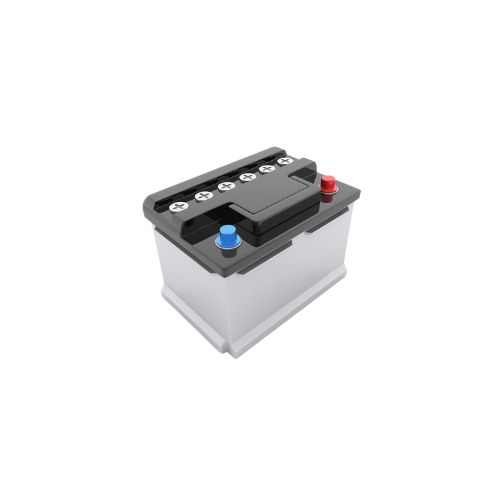

Troca de óleo
Passo a passo para mudança de óleo
- Estacione o veículo em local plano e desligue o motor.
- Levante o carro com um macaco, se necessário.
- Coloque um recipiente sob o bujão do cárter.
- Retire o bujão e deixe o óleo velho escorrer.
- Recoloque o bujão e aperte bem.
- Troque o filtro de óleo.
- Adicione o óleo novo pela tampa superior.
- Verifique o nível com a vareta e complete, se necessário.

Troca de pneu
Aprenda a trocar pneus com segurança
- Estacione o carro e ligue o pisca-alerta.
- Coloque o triângulo de sinalização.
- Afrouxe os parafusos da roda antes de suspender o carro.
- Use o macaco para levantar o veículo.
- Retire os parafusos e a roda danificada.
- Coloque o estepe e parafuse novamente.
- Baixe o carro com cuidado.
- Finalize apertando os parafusos com força.

Bateria
Como lidar com problemas na bateria
- Verifique se os cabos da bateria estão bem conectados.
- Use um multímetro para medir a voltagem (12,6V ou mais = ok).
-
Se necessário, faça uma recarga com um carregador ou cabo auxiliar.
- Evite deixar faróis ou luzes acesas com o motor desligado.
-
Substitua a bateria se ela estiver muito velha (3 anos ou mais).